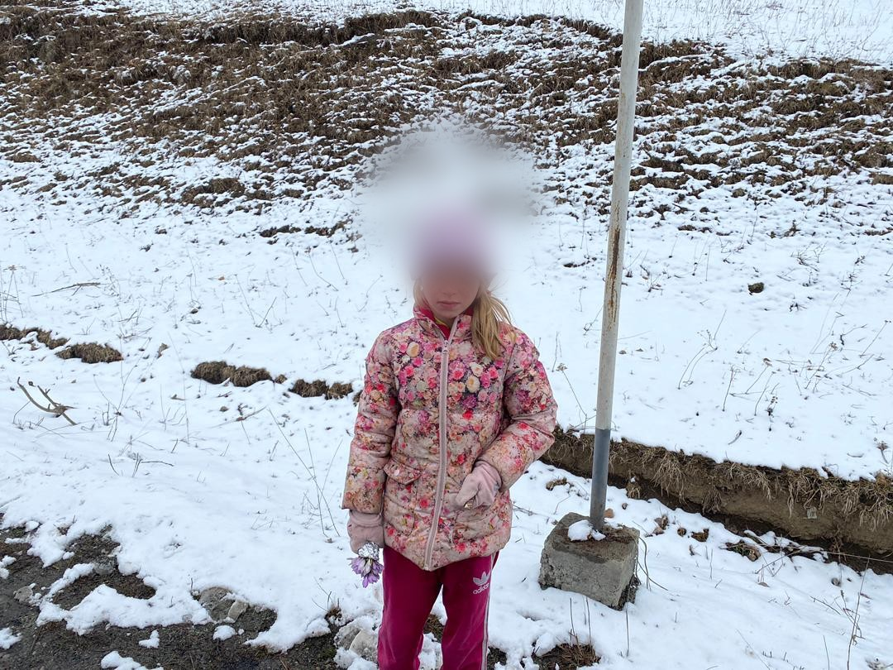

REAL STORY · 中文
雪路旁，一个太小的身影。
09 March 2024，我在 Lake Sevan 旁边的 Hayravank Monastery 附近过夜。经过 Armenia 第一段冰雪山路之后，那一晚很安静，像是旅程给我的一个停顿。
第二天，我继续往 Georgia custom 的方向开。路边还有雪，空气冷冷的。然后我看到一个很小的女孩，一个人站在 highway 路边。
我马上把 Toyotaki 靠边停下。刚开始我还反应不过来，只觉得不对劲：为什么一个小孩子会一个人在这里？她妈妈在哪里？
09/03/2024 — overnight near Hayravank Monastery, beside Lake Sevan.

Her face is blurred intentionally. This archive remembers the situation, not the child’s identity.
我问她：“Why you alone here? Where’s your mum mum?”
可是她不会说英文。她只会说她自己的语言。我听到好像有 “mum mum” 的声音，可是我听不懂。那一刻，我不知道她是迷路了、在等人，还是遇到什么问题。
所以我开始招手，请路过的人帮忙。
10/03/2024 — on the snowy road toward the Georgia customs direction.
有人停下来，世界才听得懂她。
后来有一对善心 couple 停车。他们用当地语言和她交谈，我才知道她住在附近，是在 highway 路边卖花。
知道她不是迷路，我松了一口气。可是心里还是有一点酸：她还是一个小孩子，站在雪路边，手里拿着花。
最后，我和那对 couple 都买了她的花，然后请她回去。那不是一个很大的救援故事，只是一个很小的路边动作：停下来、问、找人翻译、买下花、希望她安全回家。
A kind couple stopped to help translate. Both they and Tuzi bought flowers from the girl and asked her to go home.
后来那一晚，我在 Armenia border 附近过夜，准备第二天前往 Georgia customs。
这不是景点故事。也不是 dramatic danger。它只是旅行中一种很安静的 alarm：当路边出现一个太小、太孤单、太冷的身影，你会停下来。